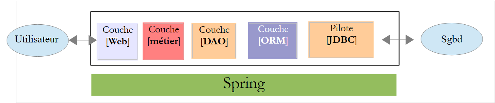
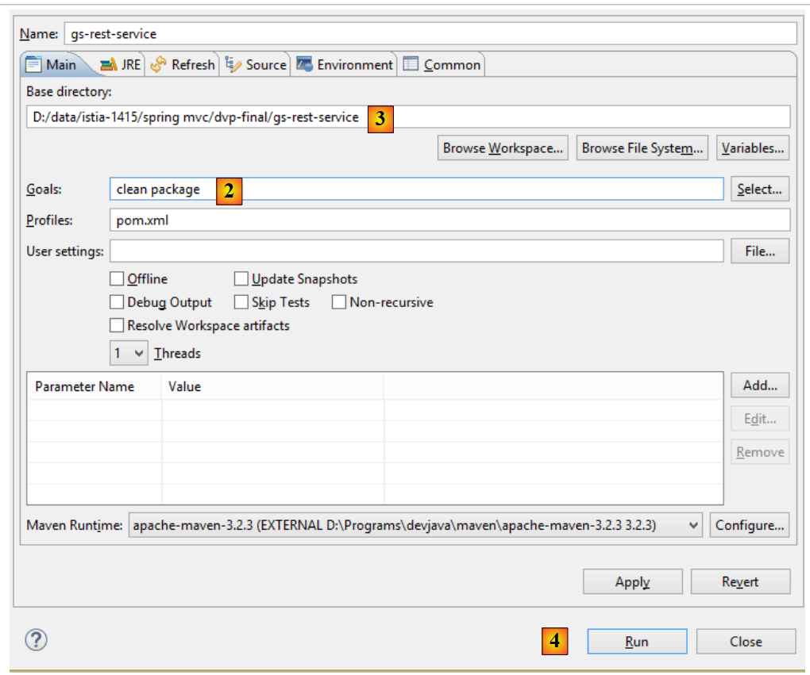

16. Introducción a Spring MVC
16.1. El papel de Spring MVC en una aplicación web
Situemos Spring MVC en el desarrollo de una aplicación web. En la mayoría de los casos, esta se construirá sobre una arquitectura multicapa como la siguiente:
 |
- la capa [Web] es la capa en contacto con el usuario de la aplicación web. Este interactúa con la aplicación web a través de páginas web visualizadas por un navegador. Es en esta capa donde se sitúa Spring MVC y únicamente en esta capa;
- la capa [métier] implementa las reglas de gestión de la aplicación, como el cálculo de un salario o de una factura. Esta capa utiliza datos procedentes del usuario a través de la capa [Web] y de SGBD a través de la capa [DAO];
- la capa [DAO] (Data Access Objects), la capa [ORM] (Object Relational Mapper) y el controlador JDBC gestionan el acceso a los datos de SGBD. La capa [ORM] sirve de puente entre los objetos manipulados por la capa [DAO] y las filas y columnas de las tablas de una base de datos relacional. Una especificación denominada JPA (Java Persistence API) permite abstraerse del ORM utilizado si este implementa dichas especificaciones. Este será el caso en este tutorial, por lo que a partir de ahora llamaremos a la capa ORM, la capa JPA;
- la integración de las capas la realiza el marco Spring;
16.2. El modelo de desarrollo de Spring MVC
Spring MVC implementa el modelo de arquitectura denominado MVC (Modelo – Vista – Controlador) de la siguiente manera:
 |
El procesamiento de una solicitud de un cliente se lleva a cabo de la siguiente manera:
- solicitud: las solicitudes URL tienen el formato http://máquina:puerto/contexto/Acción/param1/param2/....?p1=v1&p2=v2&... El [Front Controller] utiliza un archivo de configuración o anotaciones Java para «enrutar» la solicitud hacia el controlador adecuado y la acción correcta dentro de dicho controlador. Para ello, utiliza el campo [Action] del URL. El resto del URL [/param1/param2/...] está formado por parámetros opcionales que se transmitirán a la acción. El C de MVC es aquí la cadena [Front Controller, Contrôleur, Action]. Si ningún controlador puede procesar la acción solicitada, el servidor web responderá que no se ha encontrado la acción solicitada.
- Procesamiento
- (continuación)
- La acción seleccionada puede utilizar los parámetros que le ha transmitido [Front Controller]. Estos pueden provenir de varias fuentes:
- de la ruta [/param1/param2/...] del URL,
- de los parámetros [p1=v1&p2=v2] del URL,
- de los parámetros enviados por el navegador junto con su solicitud;
- al procesar la solicitud del usuario, la acción puede necesitar la capa [métier] [2b]. Una vez procesada la solicitud del cliente, esta puede generar diversas respuestas. Un ejemplo clásico es:
- una página de error si la solicitud no se ha podido procesar correctamente
- una página de confirmación en caso contrario
- la acción solicita que se muestre una vista determinada [3]. Esta vista mostrará datos que se denominan el modelo de la vista. Es la M de MVC. La acción creará este modelo M [2c] y solicitará que se muestre una vista V [3];
- respuesta: la vista V seleccionada utiliza la plantilla M creada por la acción para inicializar las partes dinámicas de la respuesta HTML que debe enviar al cliente y, a continuación, envía dicha respuesta.
Para un servicio web / jSON, la arquitectura anterior se modifica ligeramente:
 |
- en [4a], el modelo, que es una clase Java, se transforma en una cadena jSON mediante una biblioteca jSON;
- en [4b], esta cadena jSON se envía al navegador;
Ahora, precisemos la relación entre la arquitectura web MVC y la arquitectura por capas. Según la definición que se le dé al modelo, estos dos conceptos están relacionados o no. Tomemos una aplicación web Spring MVC de una sola capa:
 |
Si implementamos la capa [Web] con Spring MVC, tendremos una arquitectura web MVC, pero no una arquitectura multicapa. En este caso, la capa [web] se encargará de todo: presentación, lógica de negocio y acceso a los datos. Son las acciones las que realizarán este trabajo.
Ahora, consideremos una arquitectura web multicapa:
 |
La capa [Web] puede implementarse sin marco de trabajo y sin seguir el modelo MVC. Entonces sí que tenemos una arquitectura multicapa, pero la capa web no implementa el modelo MVC.
Por ejemplo, en el mundo .NET, la capa [Web]se puede implementar con ASP.NET MVC, con lo que se obtiene una arquitectura por capas con una capa [Web] de tipo MVC. Una vez hecho esto, se puede sustituir esta capa ASP.NET MVC por una capa ASP.NET clásica (WebForms) manteniendo el resto (de negocio, DAO, ORM) tal cual. De este modo, se obtiene una arquitectura por capas con una capa [Web] que ya no es de tipo MVC.
En MVC, dijimos que el modelo M era el de la vista V, c.a.d. El conjunto de datos mostrados por la vista V. Se da otra definición del modelo M de MVC:
 |
Muchos autores consideran que lo que se encuentra a la derecha de la capa [Web] forma el modelo M del MVC. Para evitar ambigüedades, se puede hablar:
- del modelo del dominio cuando nos referimos a todo lo que se encuentra a la derecha de la capa [Web]
- del modelo de la vista cuando se refieren a los datos mostrados por una vista V
En lo sucesivo, el término «modelo M» se referirá exclusivamente al modelo de una vista V.
16.3. Un proyecto web / jSON con Spring MVC
El sitio [http://spring.io/guides] ofrece tutoriales de inicio para descubrir el ecosistema Spring. Seguiremos uno de ellos para descubrir la configuración de Maven necesaria para un proyecto Spring MVC.
16.3.1. El proyecto de demostración
 |
- en [1], importamos una de las guías de Spring;
 |
- en [2], elegimos el ejemplo [Rest Service];
- en [3], elegimos el proyecto Maven;
- en [4], tomamos la version final de la guía;
- en [5], validamos;
- en [6], el proyecto importado;
Los servicios web accesibles a través de URL estándar y que proporcionan texto jSON suelen denominarse servicios REST (REpresentational State Transfer). Un servicio se denomina Restful si cumple ciertas reglas.
Veamos ahora el proyecto importado, empezando por su configuración de Maven.
16.3.2. Configuración de Maven
El archivo [pom.xml] es el siguiente:
<?xml version="1.0" encoding="UTF-8"?>
<project xmlns="http://maven.apache.org/POM/4.0.0" xmlns:xsi="http://www.w3.org/2001/XMLSchema-instance"
xsi:schemaLocation="http://maven.apache.org/POM/4.0.0 http://maven.apache.org/xsd/maven-4.0.0.xsd">
<modelVersion>4.0.0</modelVersion>
<groupId>org.springframework</groupId>
<artifactId>gs-rest-service</artifactId>
<version>0.1.0</version>
<parent>
<groupId>org.springframework.boot</groupId>
<artifactId>spring-boot-starter-parent</artifactId>
<version>1.2.2.RELEASE</version>
</parent>
<dependencies>
<dependency>
<groupId>org.springframework.boot</groupId>
<artifactId>spring-boot-starter-web</artifactId>
</dependency>
</dependencies>
<properties>
<start-class>hello.Application</start-class>
</properties>
<build>
<plugins>
<plugin>
<groupId>org.springframework.boot</groupId>
<artifactId>spring-boot-maven-plugin</artifactId>
</plugin>
</plugins>
</build>
<repositories>
<repository>
<id>spring-releases</id>
<url>https://repo.spring.io/libs-release</url>
</repository>
</repositories>
<pluginRepositories>
<pluginRepository>
<id>spring-releases</id>
<url>https://repo.spring.io/libs-release</url>
</pluginRepository>
</pluginRepositories>
</project>
- líneas 6-8: las propiedades del proyecto Maven. Falta una etiqueta [<packaging>] que indique el tipo de archivo generado por la compilación de Maven. A falta de esta, se utiliza el tipo [jar]. Por lo tanto, la aplicación es una aplicación ejecutable de tipo consola, y no una aplicación web, en cuyo caso el empaquetado sería [war];
- líneas 10-14: el proyecto Maven tiene un proyecto padre [spring-boot-starter-parent]. Es este el que define la mayor parte de las dependencias del proyecto. Estas pueden ser suficientes, en cuyo caso no se añaden más, o no, en cuyo caso se añaden las dependencias que faltan;
- líneas 17-20: el artefacto [spring-boot-starter-web] incluye las bibliotecas necesarias para un proyecto Spring MVC de tipo servicio web en el que no hay vistas generadas. Este artefacto incluye una gran cantidad de bibliotecas, entre las que se encuentran las de un servidor Tomcat integrado. Es en este servidor donde se ejecutará la aplicación;
Las bibliotecas que incluye esta configuración son muy numerosas:
 |  |
Arriba se ven los tres archivos del servidor Tomcat.
16.3.3. La arquitectura de un servicio Spring [web / jSON]
Para un servicio web / jSON, Spring MVC implementa el modelo MVC de la siguiente manera:
 |
- en [4a], el modelo, que es una clase Java, se transforma en una cadena jSON mediante una biblioteca jSON;
- en [4b], esta cadena jSON se envía al navegador;
16.3.4. El controlador C
 |
La aplicación importada tiene el siguiente controlador:
package hello;
import java.util.concurrent.atomic.AtomicLong;
import org.springframework.web.bind.annotation.RequestMapping;
import org.springframework.web.bind.annotation.RequestParam;
import org.springframework.web.bind.annotation.RestController;
@RestController
public class GreetingController {
private static final String template = "Hello, %s!";
private final AtomicLong counter = new AtomicLong();
@RequestMapping("/greeting")
public Greeting greeting(@RequestParam(value = "name", defaultValue = "World") String name) {
return new Greeting(counter.incrementAndGet(), String.format(template, name));
}
}
- línea 9: la anotación [@RestController] convierte la clase [GreetingController] en un controlador Spring, es decir, que sus métodos se registran para procesar URL. Hemos visto la anotación similar [@Controller]. El resultado de los métodos de este controlador era un tipo [String], que era el nombre de la vista que se iba a mostrar. Aquí es diferente. Los métodos de un controlador de tipo [@RestController] devuelven objetos que se serializan para enviarlos al navegador. El tipo de serialización que se realiza depende de la configuración de Spring MVC. Aquí, se serializarán en jSON. Es la presencia de una biblioteca jSON en las dependencias del proyecto lo que hace que Spring Boot, mediante autoconfiguración, configure el proyecto de esta manera;
- línea 14: la anotación [@RequestMapping] indica el URL que procesa el método, en este caso el URL [/greeting];
- línea 15: ya hemos explicado la anotación [@RequestParam]. El resultado devuelto por el método es un objeto de tipo [Greeting].
- línea 12: un entero long de tipo atómico. Esto significa que admite el acceso concurrente. Varios subprocesos pueden querer incrementar la variable [counter] al mismo tiempo. Esto se hará correctamente. Un subproceso solo puede leer el valor del contador si el subproceso que lo está modificando ha finalizado su modificación.
16.3.5. El modelo M
El modelo M generado por el método anterior es el siguiente objeto [Greeting]:
 |
package hello;
public class Greeting {
private final long id;
private final String content;
public Greeting(long id, String content) {
this.id = id;
this.content = content;
}
public long getId() {
return id;
}
public String getContent() {
return content;
}
}
La transformación jSON de este objeto creará la cadena de caracteres {"id":n,"content":"texto"}. Al final, la cadena jSON generada por el método del controlador tendrá la forma:
o
16.3.6. Ejecución
 |
La clase [Application.java] es la clase ejecutable del proyecto. Su código es el siguiente:
package hello;
import org.springframework.boot.autoconfigure.EnableAutoConfiguration;
import org.springframework.boot.SpringApplication;
import org.springframework.context.annotation.ComponentScan;
@ComponentScan
@EnableAutoConfiguration
public class Application {
public static void main(String[] args) {
SpringApplication.run(Application.class, args);
}
}
Ya hemos visto y explicado este código en el ejemplo anterior. Ejecutemos el proyecto:
 |
Se obtienen los siguientes registros de consola:
. ____ _ __ _ _
/\\ / ___'_ __ _ _(_)_ __ __ _ \ \ \ \
( ( )\___ | '_ | '_| | '_ \/ _` | \ \ \ \
\\/ ___)| |_)| | | | | || (_| | ) ) ) )
' |____| .__|_| |_|_| |_\__, | / / / /
=========|_|==============|___/=/_/_/_/
:: Spring Boot :: (v1.1.9.RELEASE)
2014-11-28 15:22:55.005 INFO 3152 --- [ main] hello.Application : Starting Application on Gportpers3 with PID 3152 (started by ST in D:\data\istia-1415\spring mvc\dvp-final\gs-rest-service)
2014-11-28 15:22:55.046 INFO 3152 --- [ main] ationConfigEmbeddedWebApplicationContext : Refreshing org.springframework.boot.context.embedded.AnnotationConfigEmbeddedWebApplicationContext@62e136d3: startup date [Fri Nov 28 15:22:55 CET 2014]; root of context hierarchy
2014-11-28 15:22:55.762 INFO 3152 --- [ main] o.s.b.f.s.DefaultListableBeanFactory : Overriding bean definition for bean 'beanNameViewResolver': replacing [Root bean: class [null]; scope=; abstract=false; lazyInit=false; autowireMode=3; dependencyCheck=0; autowireCandidate=true; primary=false; factoryBeanName=org.springframework.boot.autoconfigure.web.ErrorMvcAutoConfiguration$WhitelabelErrorViewConfiguration; factoryMethodName=beanNameViewResolver; initMethodName=null; destroyMethodName=(inferred); defined in class path resource [org/springframework/boot/autoconfigure/web/ErrorMvcAutoConfiguration$WhitelabelErrorViewConfiguration.class]] with [Root bean: class [null]; scope=; abstract=false; lazyInit=false; autowireMode=3; dependencyCheck=0; autowireCandidate=true; primary=false; factoryBeanName=org.springframework.boot.autoconfigure.web.WebMvcAutoConfiguration$WebMvcAutoConfigurationAdapter; factoryMethodName=beanNameViewResolver; initMethodName=null; destroyMethodName=(inferred); defined in class path resource [org/springframework/boot/autoconfigure/web/WebMvcAutoConfiguration$WebMvcAutoConfigurationAdapter.class]]
2014-11-28 15:22:56.567 INFO 3152 --- [ main] .t.TomcatEmbeddedServletContainerFactory : Server initialized with port: 8080
2014-11-28 15:22:56.738 INFO 3152 --- [ main] o.apache.catalina.core.StandardService : Starting service Tomcat
2014-11-28 15:22:56.740 INFO 3152 --- [ main] org.apache.catalina.core.StandardEngine : Starting Servlet Engine: Apache Tomcat/7.0.56
2014-11-28 15:22:56.869 INFO 3152 --- [ost-startStop-1] o.a.c.c.C.[Tomcat].[localhost].[/] : Initializing Spring embedded WebApplicationContext
2014-11-28 15:22:56.870 INFO 3152 --- [ost-startStop-1] o.s.web.context.ContextLoader : Root WebApplicationContext: initialization completed in 1827 ms
2014-11-28 15:22:57.478 INFO 3152 --- [ost-startStop-1] o.s.b.c.e.ServletRegistrationBean : Mapping servlet: 'dispatcherServlet' to [/]
2014-11-28 15:22:57.481 INFO 3152 --- [ost-startStop-1] o.s.b.c.embedded.FilterRegistrationBean : Mapping filter: 'hiddenHttpMethodFilter' to: [/*]
2014-11-28 15:22:57.685 INFO 3152 --- [ main] o.s.w.s.handler.SimpleUrlHandlerMapping : Mapped URL path [/**/favicon.ico] onto handler of type [class org.springframework.web.servlet.resource.ResourceHttpRequestHandler]
2014-11-28 15:22:57.879 INFO 3152 --- [ main] s.w.s.m.m.a.RequestMappingHandlerMapping : Mapped "{[/greeting],methods=[],params=[],headers=[],consumes=[],produces=[],custom=[]}" onto public hello.Greeting hello.GreetingController.greeting(java.lang.String)
2014-11-28 15:22:57.884 INFO 3152 --- [ main] s.w.s.m.m.a.RequestMappingHandlerMapping : Mapped "{[/error],methods=[],params=[],headers=[],consumes=[],produces=[],custom=[]}" onto public org.springframework.http.ResponseEntity<java.util.Map<java.lang.String, java.lang.Object>> org.springframework.boot.autoconfigure.web.BasicErrorController.error(javax.servlet.http.HttpServletRequest)
2014-11-28 15:22:57.885 INFO 3152 --- [ main] s.w.s.m.m.a.RequestMappingHandlerMapping : Mapped "{[/error],methods=[],params=[],headers=[],consumes=[],produces=[text/html],custom=[]}" onto public org.springframework.web.servlet.ModelAndView org.springframework.boot.autoconfigure.web.BasicErrorController.errorHtml(javax.servlet.http.HttpServletRequest)
2014-11-28 15:22:57.906 INFO 3152 --- [ main] o.s.w.s.handler.SimpleUrlHandlerMapping : Mapped URL path [/webjars/**] onto handler of type [class org.springframework.web.servlet.resource.ResourceHttpRequestHandler]
2014-11-28 15:22:57.907 INFO 3152 --- [ main] o.s.w.s.handler.SimpleUrlHandlerMapping : Mapped URL path [/**] onto handler of type [class org.springframework.web.servlet.resource.ResourceHttpRequestHandler]
2014-11-28 15:22:58.231 INFO 3152 --- [ main] o.s.j.e.a.AnnotationMBeanExporter : Registering beans for JMX exposure on startup
2014-11-28 15:22:58.318 INFO 3152 --- [ main] s.b.c.e.t.TomcatEmbeddedServletContainer : Tomcat started on port(s): 8080/http
2014-11-28 15:22:58.319 INFO 3152 --- [ main] hello.Application : Started Application in 3.788 seconds (JVM running for 4.424)
- línea 13: el servidor Tomcat se inicia en el puerto 8080 (línea 12);
- línea 17: el servlet [DispatcherServlet] está presente;
- línea 20: se ha detectado el método [GreetingController.greeting];
Para probar la aplicación web, se solicita el URL [http://localhost:8080/greeting]:
 |  |
Se recibe correctamente la cadena esperada jSON. Puede resultar interesante ver los encabezados HTTP enviados por el servidor. Para ello, utilizaremos la extensión de Chrome llamada [Advanced Rest Client] (Chrome / Ctrl-T / Menú [Applications] / [Advanced Rest Client] - véase el apartado 23.11 de los anexos):
 |
- en [1], el URL solicitado;
- en [2], se utiliza el método GET;
- en [3], la respuesta jSON;
- en [4], el servidor indicó que enviaba una respuesta en formato jSON;
- en [5], se solicita el mismo URL, pero esta vez con un POST;
- en [7], la información se envía al servidor en formato [urlencoded];
- en [6], el parámetro name con su valor;
- en [8], el navegador indica al servidor que le envía información [urlencoded];
- en [9], la respuesta jSON del servidor;
16.3.7. Creación de un archivo ejecutable
Ahora creamos un archivo ejecutable:
 |
 |
- en [1]: se ejecuta un objetivo Maven;
- en [2]: hay dos objetivos (goals): [clean] para eliminar la carpeta [target] del proyecto Maven, [package] para regenerarla;
- en [3]: la carpeta [target] generada se creará en esta carpeta;
- en [4]: se genera el objetivo;
En los registros que aparecen en la consola, es importante que aparezca el plugin [spring-boot-maven-plugin]. Es este el que genera el archivo ejecutable (véase [pom.xml] más abajo):
<build>
<plugins>
<plugin>
<groupId>org.springframework.boot</groupId>
<artifactId>spring-boot-maven-plugin</artifactId>
</plugin>
</plugins>
</build>
Con una consola, nos situamos en la carpeta generada:
D:\Temp\wksSTS\gs-rest-service\target>dir
...
11/06/2014 15:30 <DIR> classes
11/06/2014 15:30 <DIR> generated-sources
11/06/2014 15:30 11 073 572 gs-rest-service-0.1.0.jar
11/06/2014 15:30 3 690 gs-rest-service-0.1.0.jar.original
11/06/2014 15:30 <DIR> maven-archiver
11/06/2014 15:30 <DIR> maven-status
...
- línea 5: el archivo generado;
Este archivo se ejecuta de la siguiente manera:
D:\Temp\wksSTS\gs-rest-service-complete\target>java -jar gs-rest-service-0.1.0.jar
. ____ _ __ _ _
/\\ / ___'_ __ _ _(_)_ __ __ _ \ \ \ \
( ( )\___ | '_ | '_| | '_ \/ _` | \ \ \ \
\\/ ___)| |_)| | | | | || (_| | ) ) ) )
' |____| .__|_| |_|_| |_\__, | / / / /
=========|_|==============|___/=/_/_/_/
:: Spring Boot :: (v1.1.0.RELEASE)
2014-06-11 15:32:47.088 INFO 4972 --- [ main] hello.Application
: Starting Application on Gportpers3 with PID 4972 (D:\Temp\wk
sSTS\gs-rest-service-complete\target\gs-rest-service-0.1.0.jar started by ST in
D:\Temp\wksSTS\gs-rest-service-complete\target)
...
Ahora que la aplicación web se ha iniciado, se puede acceder a ella con un navegador:
 |
16.3.8. Implementar la aplicación en un servidor Tomcat
Al igual que en el proyecto anterior, modificamos el archivo [pom.xml] de la siguiente manera:
<?xml version="1.0" encoding="UTF-8"?>
<project xmlns="http://maven.apache.org/POM/4.0.0" xmlns:xsi="http://www.w3.org/2001/XMLSchema-instance"
xsi:schemaLocation="http://maven.apache.org/POM/4.0.0 http://maven.apache.org/xsd/maven-4.0.0.xsd">
<modelVersion>4.0.0</modelVersion>
<groupId>org.springframework</groupId>
<artifactId>gs-rest-service</artifactId>
<version>0.1.0</version>
<packaging>war</packaging>
...
</project>
- línea 9: hay que indicar que se va a generar un archivo WAR (Web ARchive);
Además, hay que configurar la aplicación web. A falta del archivo [web.xml], esto se hace con una clase que hereda de [SpringBootServletInitializer]:
 |
La clase [ApplicationInitializer] es la siguiente:
package hello;
import org.springframework.boot.builder.SpringApplicationBuilder;
import org.springframework.boot.context.web.SpringBootServletInitializer;
public class ApplicationInitializer extends SpringBootServletInitializer {
@Override
protected SpringApplicationBuilder configure(SpringApplicationBuilder application) {
return application.sources(Application.class);
}
}
- línea 6: la clase [ApplicationInitializer] extiende la clase [SpringBootServletInitializer];
- línea 9: el método [configure] se redefine (línea 8);
- línea 10: se proporciona la clase que configura el proyecto;
Para ejecutar el proyecto, se puede proceder de la siguiente manera:
 |
- en [1-2], se ejecuta el proyecto en uno de los servidores registrados en el IDE Eclipse;
Una vez hecho esto, se puede solicitar el URL [http://localhost:8080/gs-rest-service/greeting/?name=Mitchell] en un navegador:
 |
16.4. Conclusión
Hemos presentado un tipo de proyectos Spring MVC en los que la aplicación web envía un flujo jSON al navegador. Ahora vamos a desarrollar una aplicación web / jSON para exponer en la web la base de datos [dbproduitscategories] estudiada en los capítulos anteriores.